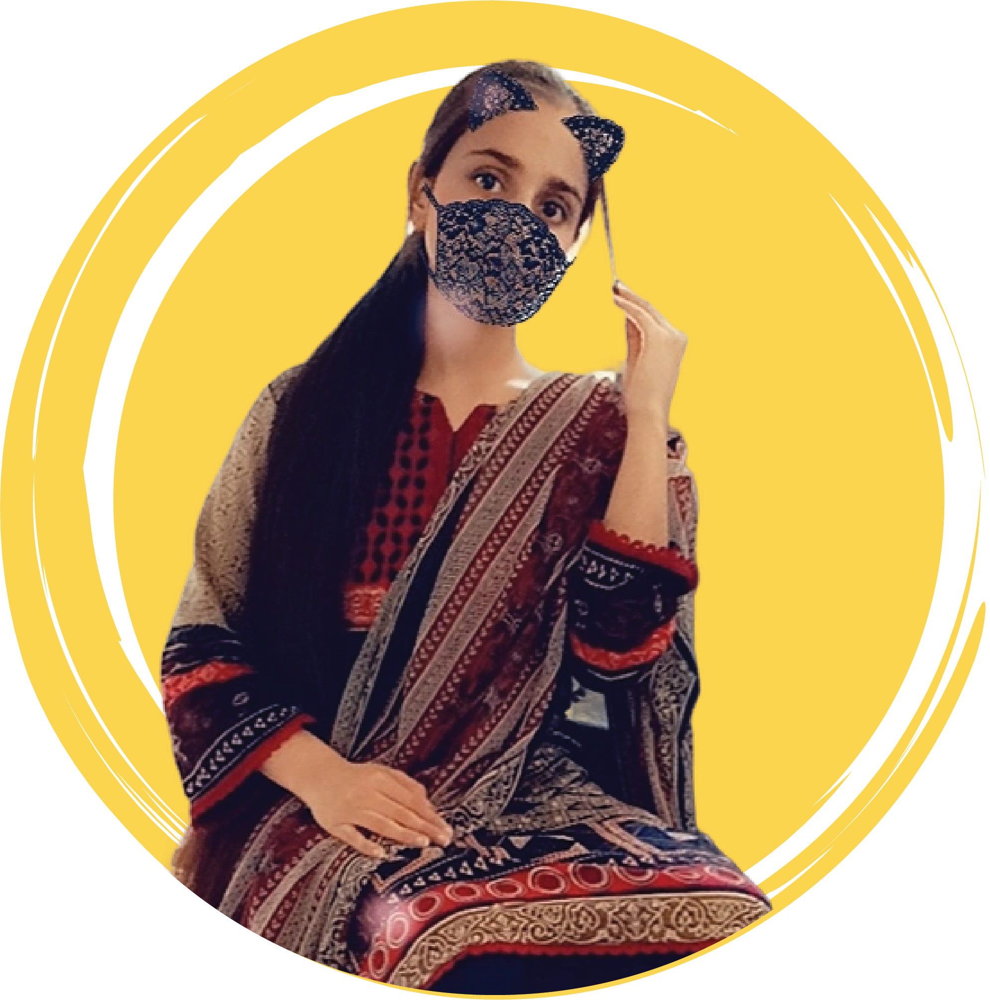

Hello, I am
Arzoo Niaz
Welcome to my portfolio!
As a versatile UI/UX designer, WordPress developer, and web developer, I've dedicated myself to crafting engaging user experiences and dynamic websites. With a focus on aesthetics, functionality, and clean code, I've transformed ideas into stunning interfaces, customized WordPress solutions, and innovative web applications.
Explore my work to see how I blend creativity with technical expertise to deliver user-centered digital solutions that make an impact.
